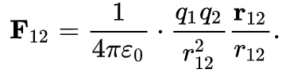

Материал из Википедии — свободной энциклопедии
Электрическая постоянная (ранее также носила название диэлектрической постоянной)
— физическая константа, скалярная величина, входящая в выражения некоторых законов электромагнетизма,
в том числе закона Кулона, при записи их в рационализованной форме,
соответствующей Международной системе единиц (СИ)[1].
Иногда, используя устаревшую терминологию, называют электрической (или диэлектрической) проницаемостью вакуума[2].
Измеряется в фарадах, делённых на метр.
Содержание
- Определение
- Численное значение
- Некоторые уравнения электродинамики в СИ
- См. также
- Примечания
1. Определение
По определению в СИ электрическая постоянная связана со скоростью света c и магнитной постоянной соотношением[1]
2. Численное значение
В Международной системе единиц
До изменения СИ 2018—2019 годов
Поскольку в СИ для магнитной постоянной было справедливо значение 4pi*10-7 Гн/м, то для электрической постоянной выполнялось соотношение
также являвшееся точным.
Учитывая, что скорости света в СИ приписано точное значение, по определению равное 299 792 458 м/с, из последнего соотношения следует численное значение магнитной постоянной в СИ:
Или, выражая то же через основные единицы СИ,
После изменений СИ 2018—2019 годов
С 2019 года вступили в силу изменения в СИ, включающие, в частности, переопределение ампера на основе фиксации численного значения элементарного заряда. Это привело к тому, что значение электрической постоянной стало экспериментально определяемой величиной, хотя численно её значение осталось прежним с высокой точностью. Значение электрической постоянной, рекомендованное CODATA[4]:
В системе СГС
В системе СГС электрическая постоянная как коэффициент, связывающий напряжённость и индукцию электрического поля в вакууме, также может быть введена. При этом в различных вариантах системы СГС электрическая постоянная имеет разную размерность и значение. Конкретно, Гауссова система единиц и система СГСЭ построены так, что электрическая постоянная безразмерна и равна 1, а в системе СГСМ она равна:
Диэлектрическая проницаемость
Стоит помнить, что на величину электрической индукции влияет диэлектрическая проницаемость
Диэлектрическая проницаемость некоторых веществ:
| Вещество | Диэлектрическая проницаемость |
|---|---|
| Воздух | 1 |
| Вода | 80 |
| Сухой песок | 3-5 |
| Водонасыщенный песок | 20-30 |
| Глина | 5-15 |
| Гранит | 4-6 |
| Известняк | 4-8 |
| Соль | 5-6 |
| Лед | 3-4 |
3. Некоторые уравнения электродинамики в СИ
В материальных уравнениях, в вакууме, через электрическую постоянную связаны вектор электрической индукции D и вектор напряжённости электрического поля E:
D=ε0E
Она также входит в запись закона Кулона (тоже в вакууме):
При использовании СИ произведение электрической постоянной на относительную диэлектрическую проницаемость называют абсолютной диэлектрической проницаемостью.
4. См. также
5. Примечания
- Электрическая постоянная — статья в Физической энциклопедии
- Деньгуб В. М., Смирнов В. Г. Единицы величин. Словарь-справочник. — М.: Издательство стандартов, 1990. — С. 213. — 240 с. — ISBN 5-7050-0118-5
- Размерность м/Гн у численного коэффициента — из размерности магнитной постоянной.
- CODATA Internationally recommended values of the Fundamental Physical Constants